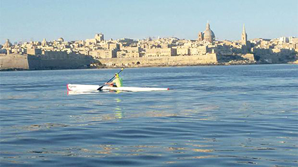

Notícias Nacionais de Malta
sábado, 24 de junho de 2017, 11 : 32
Malta tem quebra de recorde da travessia de caiaque ao redor da ilha
Chris Camilleri cobriu 75 km em sete horas
Chris Camilleri esta semana quebrou todos os recordes nacionais ao completar uma viagem de caiaque ao redor da ilha, cobrindo 75 quilômetros em apenas sete horas.
Quando Camilleri começou a andar de caiaque há 15 anos atrás, ele já era um atleta ávido, mas ele só decidiu tentar o desafio em dezembro com apenas seis meses de treino.
"Eu assumi o desafio porque queria aumentar a conscientização sobre a importância das áreas protegidas marinhas. O mar é tudo o que temos e se perdermos isso, o país sofrerá uma grande perda ", disse Camilleri ao Times of Malta.
Ele começou a viagem ao redor de Malta por volta das 6h30 na Baía de Spinola, entrando novamente na Baía de St Julian sete horas depois.
No regime de treinamento que conduziu à façanha, Camilleri disse que treinou três a quatro vezes por semana, com uma sessão adicional mais intensa a cada três semanas.
Enquanto o atleta estava estudando uma data para o desafio, monitorando o clima de perto, ele relamente decidiu o dia exato há apenas uma semana. "Eu me senti bem preparado nas últimas seis semanas e, na semana passada, decidi que tinha fazer isso", disse Camilleri.
Embora sua principal razão para enfrentar o desafio fosse aumentar a conscientização sobre a proteção das áreas marinhas, Camilleri admitiu que quebrar o recorde era algo com o qual ele estava extremamente orgulhoso.
"Eu fiquei sem palavras. Claro que queria quebrar o recorde, mas nunca espereis quebrar em mais de uma hora e meia ", disse ele. O recorde anterior era de oito horas e meia.
Ele acrescentou que esperava que o desafio também ajudasse a transmitir sua mensagem às autoridades para garantir que o mar fosse protegido adequadamente.
"Enquanto remava em torno de Malta, fiquei hipnotizado com a beleza do mar e com a claridade e a limpeza. Espero que esse desafio sirva para ajudar a manter esse objetivo ", disse Camilleri.
O feito em números
Velocidade média: 9,9 km / h
Velocidade média de movimento: 10,1 km / h
Velocidade máxima: 17km / h
Total: 7 horas 40 segundos
Tempo de movimento: 6 horas 50 minutos 12 segundos
Tempo decorrido: 7 horas 1 minuto 16 segundos
Queima de calorias: 7.518